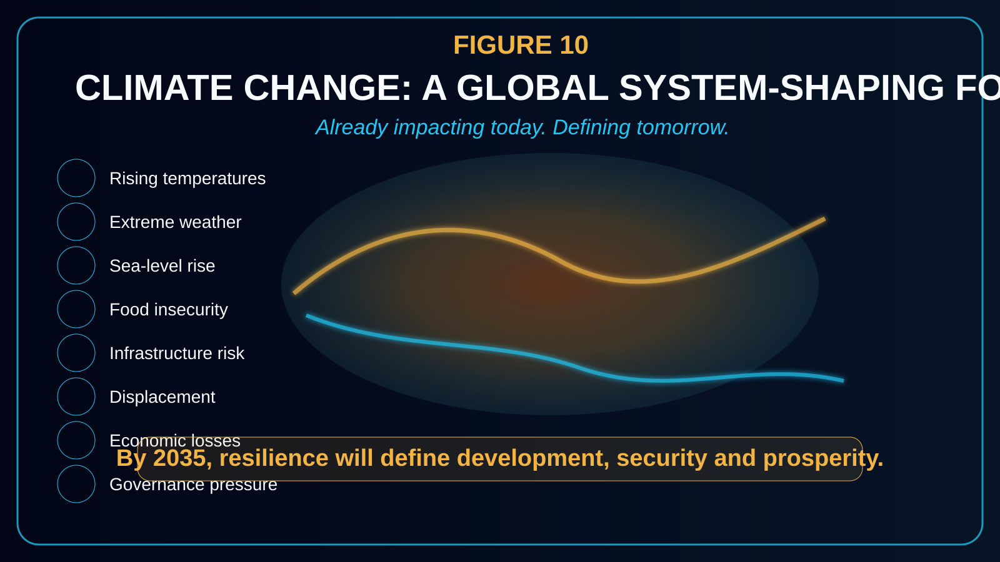
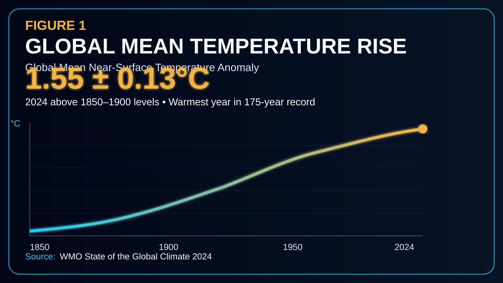
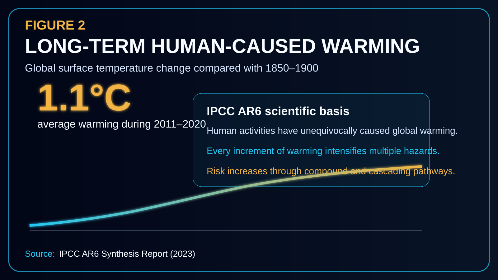
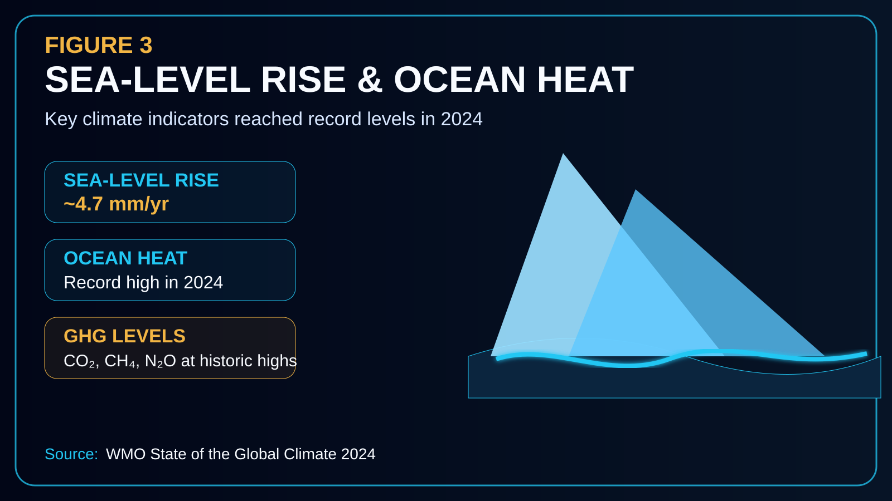
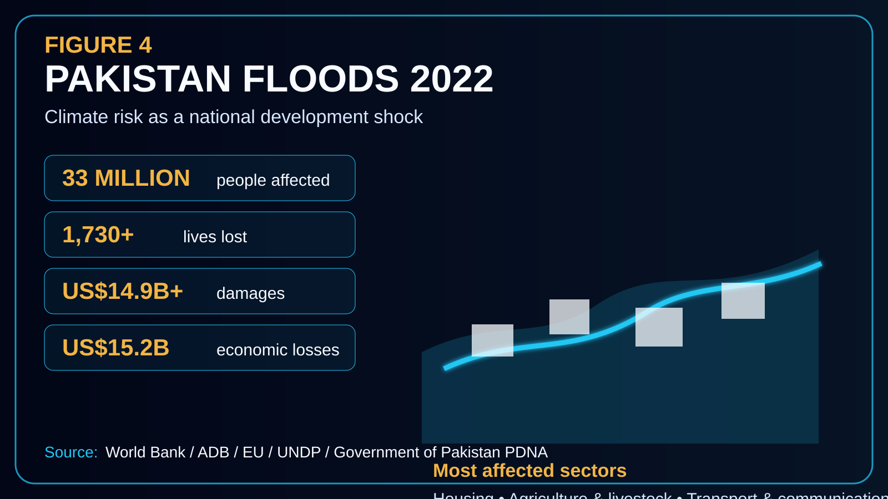
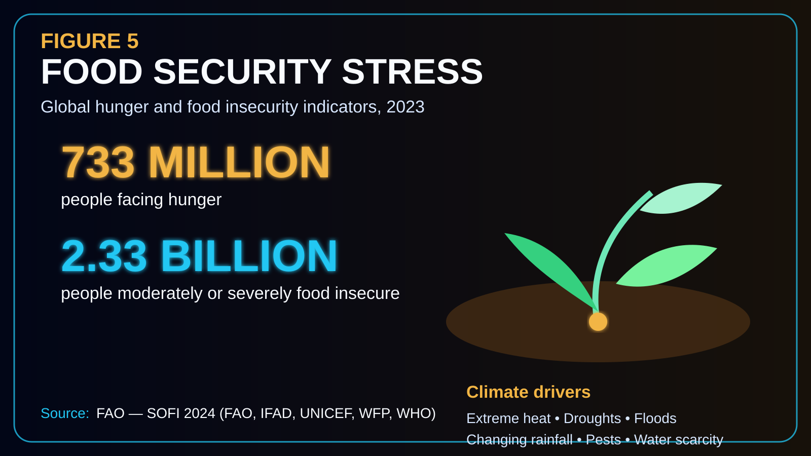
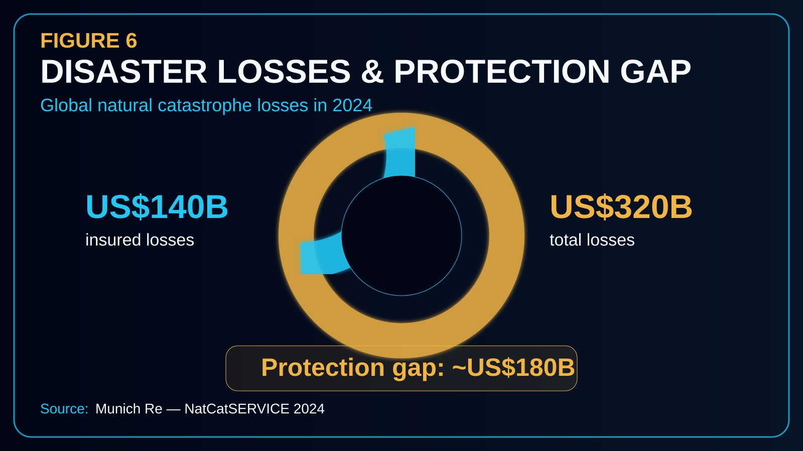
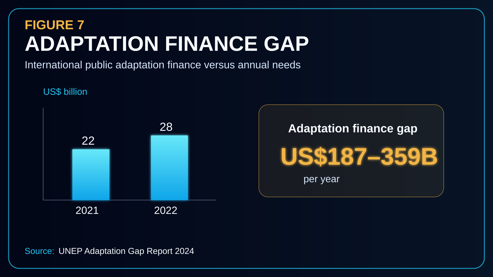
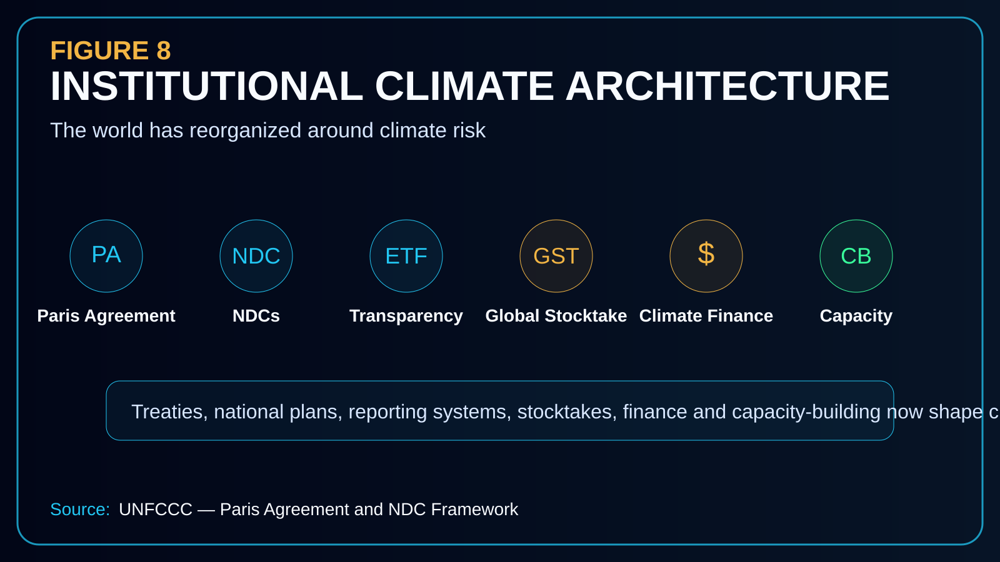
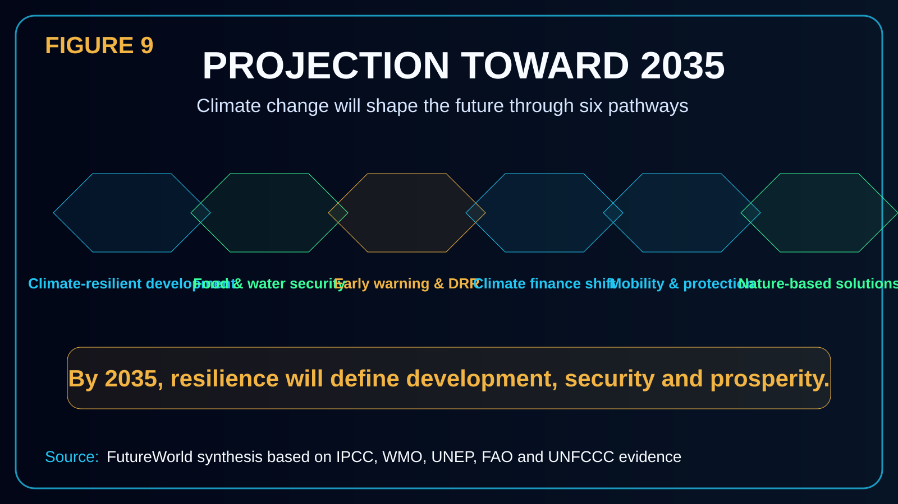

Executive Summary
Climate change is no longer a distant environmental concern. It has become a systemic risk multiplier, a development constraint, a macroeconomic pressure, a security stressor and a driver of institutional transformation. Its significance lies not only in rising temperatures, but in the way warming interacts with water systems, food production, infrastructure, disaster risk, public health, migration, finance, ecosystems and governance.
The empirical foundation is now strong. The IPCC states that human activities have unequivocally caused global warming, with global surface temperature reaching approximately 1.1°C above the 1850–1900 baseline during 2011–2020. The same assessment concludes that every additional increment of warming intensifies multiple and concurrent hazards.
In 2024, the WMO reported that global mean near-surface temperature reached 1.55 ± 0.13°C above the 1850–1900 average, making it the warmest year in the 175-year observational record. These figures are not abstract: Pakistan’s 2022 floods affected 33 million people, caused damages above US$14.9 billion, economic losses around US$15.2 billion and reconstruction needs of at least US$16.3 billion.

1. Core Thesis
Climate change qualifies as a global future-shaping force because it alters the biophysical conditions upon which human civilization depends. Temperature regimes, precipitation systems, cryosphere stability, ocean heat, sea level, soil moisture, river flows, ecosystems, crop productivity and coastal exposure are no longer stable planning assumptions.
The future will be shaped by climate change through three interlinked pathways: physical disruption, socioeconomic transmission and institutional transformation. Physical disruption includes heat, rainfall, floods, droughts, storms, sea level and hydrological change. Socioeconomic transmission includes agriculture, food security, infrastructure, public health, livelihoods, migration, insurance and fiscal stability. Institutional transformation includes climate treaties, NDCs, adaptation plans, climate finance, transparency systems, loss-and-damage mechanisms, early warning and resilience investment.
Heat, rainfall, ocean, cryosphere, flood and drought regimes change the operating environment.
Food, water, health, migration, infrastructure, public finance and livelihoods are affected.
National and international systems reorganize around climate risk and resilience.
2. Figure-Based Evidence Framework
The following figures provide the evidence base for treating climate change as a structural driver of the future toward 2035.








3. Sectoral Impact Analysis
Temperature, heat stress and human productivity
Rising mean temperatures and increasing heatwave intensity affect public health, labor productivity, agriculture, livestock, electricity demand, water use and urban livability. By 2035, heat stress may influence labor regulations, school timings, crop calendars, electricity demand, building standards, cooling access and urban greening policy.
Hydrometeorological extremes
A warmer atmosphere can hold more moisture, increasing the potential intensity of heavy precipitation events. In vulnerable mountain, monsoon, river-basin and urban drainage systems, intense rainfall can produce flash floods, cloudburst-type disasters, hill torrents, landslides and urban inundation.
Food systems and livelihoods
Climate change affects food systems through heat stress, floods, drought, pests, soil moisture shifts and supply-chain disruption. By 2035, climate-smart agriculture, resilient seed systems, water harvesting, soil conservation, climate advisories and crop insurance will be strategic requirements.
Infrastructure, urban systems and public investment
Infrastructure designed for past climate conditions may fail under future extremes. Roads, bridges, culverts, schools, hospitals, irrigation canals, drainage networks, power lines, housing and water supply systems are vulnerable to extreme rainfall, heat, floods, storms, landslides and coastal risk.
Health, displacement and human security
Climate change affects health through heat stress, waterborne disease, air quality, food insecurity, malnutrition, disaster trauma, vector-borne disease and displacement. Climate mobility will increasingly require planning for housing, services, jobs, water, land tenure and local governance.
Coastal risk and ocean systems
Coastal regions face interacting risks from sea-level rise, storm surge, erosion, salinity intrusion, tropical cyclones, fisheries disruption and marine heatwaves. Earthquakes and tsunamis are not climate-change impacts, but countries with multi-hazard exposure need integrated disaster governance.
4. Institutional Evidence
Climate change is a future-shaping force because the world has already built a permanent institutional architecture around it. The Paris Agreement is a legally binding international treaty with goals to hold warming well below 2°C and pursue efforts to limit warming to 1.5°C. Nationally Determined Contributions place climate action at the center of national policy cycles.
The Enhanced Transparency Framework and Global Stocktake institutionalize measurement, reporting, review and ambition cycles. Climate finance further proves institutional transformation: UNEP identifies a major adaptation finance gap, while the Green Climate Fund and other mechanisms show that climate action is now a permanent part of development finance.
5. Projection Toward 2035
By 2035, climate change is likely to shape the future through six structural pathways: climate-resilient development, food and water security, disaster risk reduction, climate finance, climate-sensitive mobility and nature-based solutions.

- Climate-resilient development: development planning will integrate climate risk assessment, resilience standards, ecosystem restoration, low-emission pathways and adaptation finance.
- Food and water security: climate variability will affect crop calendars, irrigation demand, water storage, livestock systems, soil health and rural livelihoods.
- Early warning and disaster risk reduction: forecasting, early warning, risk communication, local preparedness and resilient infrastructure will become core state functions.
- Climate finance and investment: adaptation finance, resilience bonds, insurance, concessional lending, climate funds, carbon markets and green infrastructure will influence national pathways.
- Climate mobility and social protection: shocks will increasingly affect displacement, poverty, health vulnerability and urban pressure.
- Nature-based solutions: forests, watersheds, wetlands, mangroves, soils, rangelands and biodiversity will be treated as natural infrastructure.
6. FutureWorld Intelligence Assessment
Climate change is one of the five forces shaping the future because it has moved through three stages: scientific detection, systemic impact and institutional transformation. It is changing the planetary baseline, intensifying compound and cascading risks, damaging infrastructure and food systems, increasing disaster losses, widening adaptation finance needs and forcing a permanent transformation of global governance.
By 2035, the dividing line between resilient and vulnerable societies will increasingly depend on climate intelligence: the ability to understand risk, anticipate hazards, mobilize finance, restore ecosystems, protect communities, redesign infrastructure and govern under uncertainty.
Source Base
IPCC AR6 Synthesis Report. Scientific basis for human-caused warming, observed impacts, compound risk and every increment of warming increasing hazards. Open source
WMO State of the Global Climate 2024. Global mean near-surface temperature of 1.55 ± 0.13°C above 1850–1900 and record climate indicators. Open source
World Bank / ADB / EU / UNDP / Government of Pakistan PDNA. Pakistan 2022 flood damages, losses, affected population and reconstruction needs. Open source
UNEP Adaptation Gap Report 2024. Adaptation finance flows and estimated adaptation finance gap. Open source
FAO SOFI 2024. Hunger and moderate or severe food insecurity figures, jointly produced with IFAD, UNICEF, WFP and WHO. Open source
UNFCCC Paris Agreement. Institutional architecture: NDCs, finance, transparency, adaptation and global stocktake. Open source
Green Climate Fund. Climate finance institution supporting low-emission and climate-resilient development in developing countries. Open source